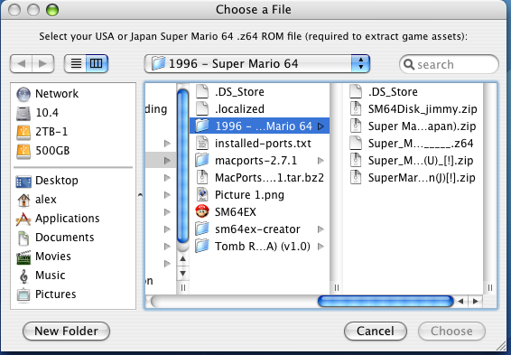
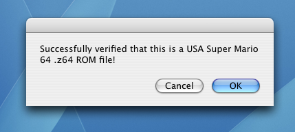
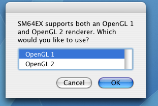
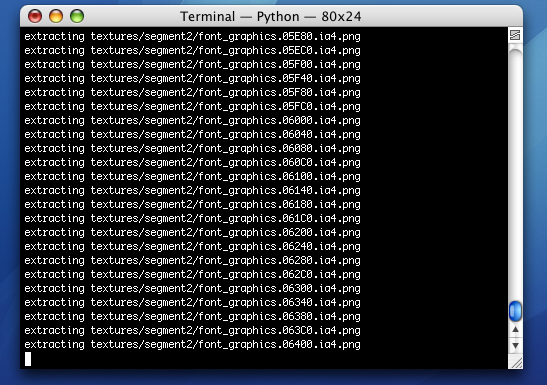
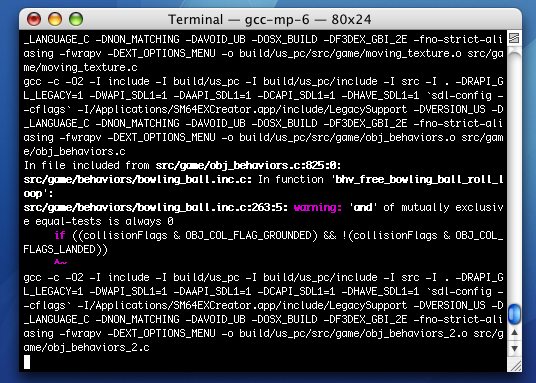
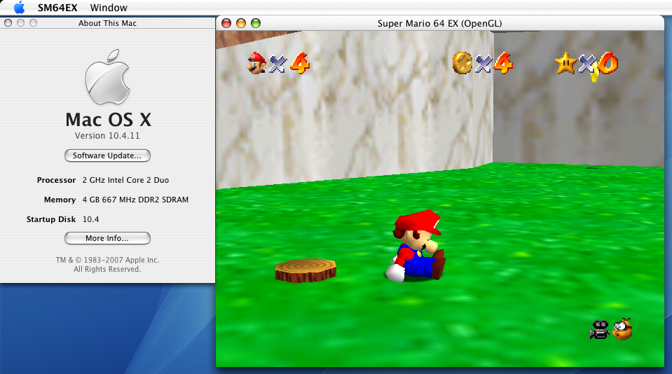

By Alex Free
This software can create a native Super Mario 64 Port for Mac OS X 10.4 Intel Tiger on your Mac's desktop with an all in one easy to use GUI.
It compiles my fork of SM64EX. Currently this requires:
There IS controller support available, see the usage section for more info
SM64EX Creator is like sm64nxBuilder but for Mac OS X instead of Windows.
Homepage || GitHub || Macintosh Garden






SM64EX Creator v1.0 for Mac OS X 10.4.11 Intel Macs
Download the latest release and extract the zip file. Copy the SM64EXCreator.app into the /Applications directory. SM64EXCreator.app must be in the /Applications directory to work, you will be prompted to move it there if it is not.
Double click /Applications/SM64EXCreator.app. A Finder window will open, allowing you to select your Super Mario 64 .z64 ROM file. This is required to extract the copyrighted game assets. After selecting your rom file, SM64EX Creator will verify that the ROM file is either the original Japan or USA release, and that it is in the correct .z64 format.
After that, you'll be asked what OpenGL version you want to use. The default is OpenGL 1.
| Comparison | OpenGL 1 | OpenGL 2 |
|---|---|---|
| Compatibility | Works on any Mac | Not supported by most Macs |
| Graphical accuracy | Not as good as Open GL 2 | Most accurate with least amount of glitches |
| Performance | Worse then OpenGL 1 | Fastest option |
After that, a Terminal.app window will open and start building SM64EX to your specifications. This will take quite a while, wait for the Terminal window to say it's done building SM64EX.app (which will be on your desktop).
The ~/Desktop/SM64EX.app is a portable app, the save and config files are contained within the app itself. To access them, start SM64EX.app and select either the Edit Config File or Open Preferences Folder option. Alternatively, you can right click SM64EX.app and click Show Package Contents to look at the files manually as well.
SM64EX supports any controller that works with SDL 1. You can even use an Xbox 360 controller if you install the Tattibogle Xbox 360 Controller OS X Driver. The important thing is to connect the controller before starting the game. The easist way to configure the button mappings is to mess around in the settings menu of the port.
You can access the settings menu in the port by pressing the START button (enter by default) once you are able to pause the game. Then press the R button (right shift by default). Use the control stick (WASD by default) to navigate it.
SM64EX Creator contains SDL 1.2.15, and it's own internal MacPorts installation, with all the software except SM64EX itself already compiled (see the list of MacPorts/LeopardPorts software installed below) due to the need of a ROM file to extract the copyrighted game assets.
Full list of installed software in the internal MacPorts prefix of SM64EXCreator.app:
apple-gcc42 @5666.3 lang/apple-gcc42
apple-gcc42 @5666.3 lang/apple-gcc42
autoconf @2.71 devel/autoconf
automake @1.16.5 devel/automake
bzip2 @1.0.8 archivers/bzip2
cctools @949.0.1 devel/cctools
coreutils @8.32 sysutils/coreutils
curl @7.82.0 net/curl
curl-ca-bundle @7.82.0 net/curl
db48 @4.8.30 databases/db48
expat @2.4.7 textproc/expat
gcc6 @6.5.0 lang/gcc6
gcc_select @0.1 sysutils/gcc_select
gdbm @1.23 databases/gdbm
gettext @0.21 devel/gettext
gettext-runtime @0.21 devel/gettext
gettext-tools-libs @0.21 devel/gettext
git @2.35.1 devel/git
glew @2.2.0 graphics/glew
gmake @4.3 devel/gmake
gmp @6.2.1 devel/gmp
gperf @3.1 devel/gperf
help2man @1.49.1 textproc/help2man
i686-w64-mingw32-binutils @2.37 cross/i686-w64-mingw32-binutils
isl @0.24 devel/isl
kerberos5 @1.19.2 net/kerberos5
ld64 @3 devel/ld64
ld64-97 @97.17 devel/ld64
legacy-support @1.0.4 devel/legacy-support
libcomerr @1.45.6 sysutils/e2fsprogs
libedit @20210910-3.1 devel/libedit
libffi @3.4.2 devel/libffi
libgcc6 @6.5.0 lang/gcc6
libgcc7 @7.5.0 lang/gcc7
libiconv @1.16 textproc/libiconv
libidn @1.38 mail/libidn
libidn2 @2.3.2 mail/libidn2
libmacho-headers @949.0.1 devel/libmacho
libmpc @1.2.1 devel/libmpc
libpsl @0.21.1-20210726 net/libpsl
libtextstyle @0.21 devel/gettext
libtool @2.4.6 devel/libtool
libunistring @1.0 textproc/libunistring
libunwind-headers @5.0.1 devel/libunwind
lmdb @0.9.29 databases/lmdb
lz4 @1.9.3 archivers/lz4
lzip @1.23 archivers/lzip
m4 @1.4.19 devel/m4
mpfr @4.1.0 devel/mpfr
mpstats @0.2.0 sysutils/mpstats
ncurses @6.3 devel/ncurses
openssl @3 devel/openssl
openssl3 @3.0.1 devel/openssl3
p5.28-authen-sasl @2.160.0 perl/p5-authen-sasl
p5.28-b-cow @0.4.0 perl/p5-b-cow
p5.28-capture-tiny @0.480.0 perl/p5-capture-tiny
p5.28-cgi @4.540.0 perl/p5-cgi
p5.28-clone @0.450.0 perl/p5-clone
p5.28-cpan-meta @2.150.10 perl/p5-cpan-meta
p5.28-cpan-meta-requirements @2.140.0 perl/p5-cpan-meta-requirements
p5.28-cpan-meta-yaml @0.18.0 perl/p5-cpan-meta-yaml
p5.28-devel-checkbin @0.40.0 perl/p5-devel-checkbin
p5.28-digest-hmac @1.40.0 perl/p5-digest-hmac
p5.28-digest-sha1 @2.130.0 perl/p5-digest-sha1
p5.28-encode @3.160.0 perl/p5-encode
p5.28-encode-locale @1.50.0 perl/p5-encode-locale
p5.28-error @0.170.290 perl/p5-error
p5.28-extutils-makemaker @7.640.0 perl/p5-extutils-makemaker
p5.28-extutils-manifest @1.730.0 perl/p5-extutils-manifest
p5.28-gssapi @0.280.0 perl/p5-gssapi
p5.28-html-parser @3.760.0 perl/p5-html-parser
p5.28-html-tagset @3.200.0 perl/p5-html-tagset
p5.28-http-date @6.50.0 perl/p5-http-date
p5.28-http-message @6.360.0 perl/p5-http-message
p5.28-inc-latest @0.500.0 perl/p5-inc-latest
p5.28-io-html @1.4.0 perl/p5-io-html
p5.28-io-socket-ip @0.410.0 perl/p5-io-socket-ip
p5.28-io-socket-ssl @2.74.0 perl/p5-io-socket-ssl
p5.28-lwp-mediatypes @6.40.0 perl/p5-lwp-mediatypes
p5.28-module-build @0.423.100 perl/p5-module-build
p5.28-module-metadata @1.0.37 perl/p5-module-metadata
p5.28-mozilla-ca @20211001 perl/p5-mozilla-ca
p5.28-net-libidn @0.120.0 perl/p5-net-libidn
p5.28-net-smtp-ssl @1.40.0 perl/p5-net-smtp-ssl
p5.28-net-ssleay @1.920.0 perl/p5-net-ssleay
p5.28-perl-ostype @1.10.0 perl/p5-perl-ostype
p5.28-pod-escapes @1.70.0 perl/p5-pod-escapes
p5.28-pod-simple @3.430.0 perl/p5-pod-simple
p5.28-podlators @4.140.0 perl/p5-podlators
p5.28-scalar-list-utils @1.610.0 perl/p5-scalar-list-utils
p5.28-socket @2.32.0 perl/p5-socket
p5.28-sub-name @0.260.0 perl/p5-sub-name
p5.28-sub-uplevel @0.280.0 perl/p5-sub-uplevel
p5.28-term-readkey @2.380.0 perl/p5-term-readkey
p5.28-test-deep @1.130.0 perl/p5-test-deep
p5.28-test-exception @0.430.0 perl/p5-test-exception
p5.28-test-fatal @0.16.0 perl/p5-test-fatal
p5.28-test-needs @0.2.9 perl/p5-test-needs
p5.28-test-nowarnings @1.60.0 perl/p5-test-nowarnings
p5.28-test-warn @0.360.0 perl/p5-test-warn
p5.28-time-local @1.300.0 perl/p5-time-local
p5.28-timedate @2.330.0 perl/p5-timedate
p5.28-try-tiny @0.310.0 perl/p5-try-tiny
p5.28-uri @5.100.0 perl/p5-uri
p5.28-version @0.992.900 perl/p5-version
p5.34-locale-gettext @1.70.0 perl/p5-locale-gettext
pcre2 @10.39 devel/pcre
perl5 @5.28.3 lang/perl5
perl5.28 @5.28.3 lang/perl5
perl5.30 @5.30.3 lang/perl5
perl5.34 @5.34.0 lang/perl5
pkgconfig @0.29.2 devel/pkgconfig
popt @1.18 devel/popt
python3_select @0.0 sysutils/python3_select
python39 @3.9.10 lang/python39
python310 @3.10.2 lang/python310
python_select @0.3 sysutils/python_select
readline @8.1.2.000 devel/readline
rsync @3.2.3 net/rsync
sqlite3 @3.38.0 databases/sqlite3
texinfo @6.8 textproc/texinfo
xattr @0.1 sysutils/xattr
xxhashlib @0.8.1 devel/xxhash
xz @5.2.5 archivers/xz
zlib @1.2.11 archivers/zlib
zstd @1.5.2 archivers/zstdSM64EX Creator itself is released into the public domain. The full license below is distributed with SM64EX Creator, it is only applicable to SM64EX Creator itself and not to the SM64EX port or internal MacPorts installation and any of it's dependencies.
This is free and unencumbered software released into the public domain.
Anyone is free to copy, modify, publish, use, compile, sell, or
distribute this software, either in source code form or as a compiled
binary, for any purpose, commercial or non-commercial, and by any
means.
In jurisdictions that recognize copyright laws, the author or authors
of this software dedicate any and all copyright interest in the
software to the public domain. We make this dedication for the benefit
of the public at large and to the detriment of our heirs and
successors. We intend this dedication to be an overt act of
relinquishment in perpetuity of all present and future rights to this
software under copyright law.
THE SOFTWARE IS PROVIDED "AS IS", WITHOUT WARRANTY OF ANY KIND,
EXPRESS OR IMPLIED, INCLUDING BUT NOT LIMITED TO THE WARRANTIES OF
MERCHANTABILITY, FITNESS FOR A PARTICULAR PURPOSE AND NON-INFRINGEMENT.
IN NO EVENT SHALL THE AUTHORS BE LIABLE FOR ANY CLAIM, DAMAGES OR
OTHER LIABILITY, WHETHER IN AN ACTION OF CONTRACT, TORT OR OTHERWISE,
ARISING FROM, OUT OF OR IN CONNECTION WITH THE SOFTWARE OR THE USE OR
OTHER DEALINGS IN THE SOFTWARE.
For more information, please refer to http://unlicense.org